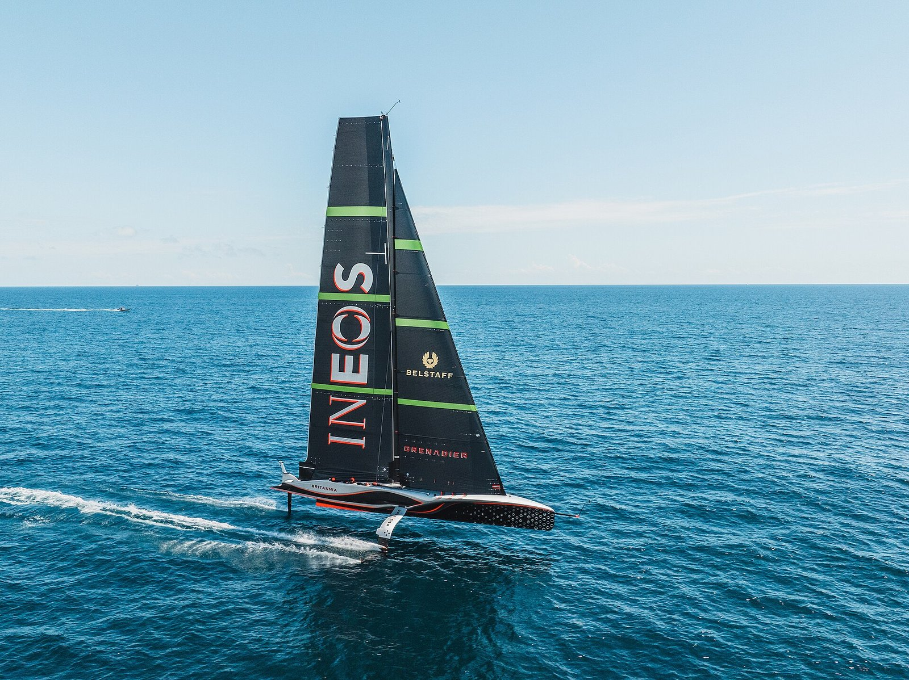

Sports · Other Sports
Louis Vuitton 38th America's Cup
- Dates
- Venue
- Gulf of Naples
- Location
- Naples, Italy
- Format
- In-person
- Category
- Other Sports
- Industry
- Sailing
- Organiser
- Americas Cup Event / Emirates Team New Zealand
- Official website
- https://www.americascup.com/
About
The official Match start date is local civil date 10 July 2027 in the Gulf of Naples. Subsequent racing days follow the published Match format; an official closed end date had not been issued on americascup.com as of 24 Nov 2026, so the recorded end date is the published start day. The Louis Vuitton Cup challenger selection series precedes the Match in the same Naples cycle.
Topics: America's Cup, sailing, AC75.
No organiser attendance figure found on the official pages fetched 24 Nov 2026 for this upcoming edition. Ranked by our estimated size tier 'large' (30,000-100,000 attendees/visits), a judgement from format, venue and scale, not an official number.
Sources
- Official — https://www.americascup.com/